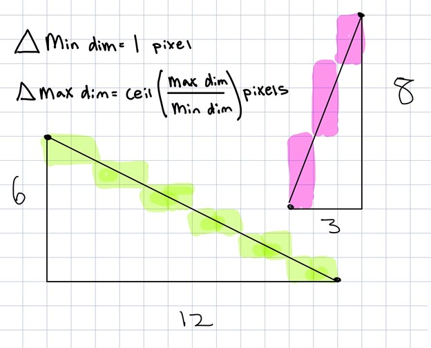
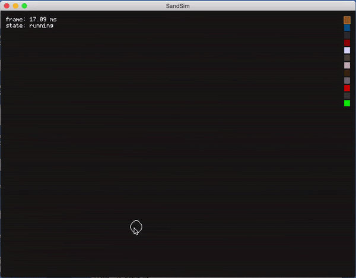

|
Tyler Bohan, Matt Bronars, Andrew Yeh, Prabhman Dhaliwal
Our objective for our project Particles All the Way Down was to be able to make abstract 2D scenes with custom particles that we add to a codebase with interactive parameters such as material modeling, light, and particle interaction. This gave us the most room for creativity and to demonstrate some topics we learned in this class, such as simulating simplified particle systems, ray tracing and RT acceleration, and rendering pipeline techniques. We were influenced by Noita, a game where there is an array of particles, each of which acts differently with each other and the environment. We were also influenced heavily by the blackhole simulator and wanted to find a way to merge the two ideas. Our code starting point was a hefty particle simulating codebase made by MrFrenik with many particles already implemented, giving us an excellent starting spot. We then proceeded to implement lighting effects. We included: one bounce illumination, a mobile light source, multiple light sources, a 3-d lighting effect, and variable transparency depending on the type of particle. We then set to create a special types of particles. We created a magnetic particle that attracted other particles in the vicinity to it. Our last and ambition plan was to create a black hole particle with all the attributes of a black hole. We found this especially difficult to do, especially in a 2 dimensional space, and were not quite able to complete it.
The boilerplate code for this project was given via a project by MrFrenik, aka Josh Jackson, under the “recreating Noita’s Sand Simulation” project on youtube. The github will be linked at the bottom. This codebase is based on MrFrenik’s game development framework, called Gunslinger. Since this is a framework, it just abstracts away features that we would normally have to request from the OS, so it isn’t anything like Unity or Unreal that does all the graphics processing for us. The most useful thing it gave us was the ability to do vector math on the GPU and had useful pre-defined shaders that did a lot of the color calculations and interpolations for us, so we wouldn’t have to recalculate them. This code base gave us primitive particles, such as sand and water and many others, and gave us the tools we needed to build new particles and add dynamic lighting. The technicalities involving the complex particles was based on some simple vector math and what we wanted the particles to do. We intended on also adding a Conway’s Game of Life sim, but this proved too challenging and integrating that with the particles would have felt like another project entirely. The technical approach for the two objectives completed in this project (addition of 2 new complex particles, and dynamic lighting on the 2D particles) are described below.
|

|
|
|
This aspect was the simpler of the two, mainly because the simulation did not need to be completely realistic. We created a magnet particle which would calculate the velocity of the particle with respect to a magnet positioned somewhere on the gridspace. This velocity was directioned such that it pulled all particles (stationary or in motion) towards it. Once it touched the magnet, the particle disappeared. This was just a matter of swapping information in the buffer for the particles and the textures.
The second particle, which was much more difficult to implement, was the black hole particle. This particle was based on a simple formula to help rotate the particles around the black hole object by giving each particle a centripetal force towards the center of the black hole, and a velocity vector perpendicular to that force. As the object near closer and closer to the center as they get faster and faster, the screen became unstable due to how much motion and interaction had to be calculated on the screen. Some of these calculations (which can be seen in update_blackhole() and update_sand/water/etc in the code) were parallelized on the GPU thanks to the boilerplate code using Gunslinger, but not all of it was. There was no way for us to fix this without rebuilding a lot of the pre-existing codebase, so we just left it as is, because the desired affect occurred, it just couldn’t be easily optimized well enough. Lastly, and the most persistent issue with the black hole particle, was that because of the interaction with some particles with themselves (for example how sand pushes other sand particles out of the way when they are on the same grid space), the particles stick to the sides of the scene. If the simulation is ran for a long time, all the particles eventually converge to the center of the black hole and disappear, however this behavior is very slow and was based on a factor not dependent on the perpendicular velocity to the centripetal force. This was an issue we could not fix in time.
Some lessons learned for this situation: we feel that doing something like Kenny’s project from the previous year might have been better (and less sophisticated) than the approach we did. We really wanted to emulate some of what Noita did and have a cool sandbox-style 2D particle simulator. And while we did have some incredible starting code to get us started and created some meaningful effects in our project time frame, the overall range of what we could have accomplished with this code (without just completely rewriting everything from scratch), is not as high as it could have been with a more focused project. All in all, this project was enjoyable and well conceptualized, and we feel like there is much potential to explore this sandbox style project to do more interesting graphics renders.

|
|

|

|
- Rishi (particle sim guidance) and Kenny (black hole visualization guidance, still WIP)
- Professor Ren guidance on light sim and how it interacts with simple gravitational constructs
- John (MrFrenik), the dude who made this video and wrote a large swath of this glorious particle codebase. Also wrote the gunslinger framework that made it easier to apply a lot of this stuff. Also helped us out by directly communicating with us:
link- The people at Nolla games who made Noita that inspired this project :) --even though they didnt respond to our emails :(
Matthew:
Tyler:
Prabham:
Andrew: